First cicuit design
25/11/2020 5:34PM
I have previously used an open-source circuit design tool called KiCad to design simple circuits. I made use of this piece of software to design a circuit around an IMU that will collect motion and rotation data. This data can then be processed to determine the state of the system; its acceleration, veloity, orientation, altitude and spin can be found. This will form the basis on which the rest of the TVC system is built, as this data is vital to knowing what needs to be corrected.

Circuit design issue
26/11/2020 12:11PM
Having designed the circuit using the IMU, it then become unavaliable requiring that the circuit be redesigned with a new component. I had to find a new component that would fit my use case was avaliable; there are many examples of the components I needed separated into multiple parts, but it would be much simpler to keep them all in the same package.
Researching alternative chips
26/11/2020 12:46PM
I have done some research into the options on Mouser and have found two potential ICs:
The latter has better functionality and accuracy, so should be better for my use case with both being of similar design and thus difficulty to use.
New IC; second circuit
26/11/2020 1:25PM
I have redesigned the circuit to make use of this new IC.
Next, I will need to consider the comminucation with the IC and also the power that needs to be supplied to the IC.

New IC: completed design
26/11/2020 1:41PM
Each of the comminucation pins has been connected to a label to allow connection to a set of pins for connection to an Arduino. The 1.8V voltage supply has been sourced using a voltage divider from the Arduino's 5V supply. Potential dividers are documented in the report section fo this project.

First components received and assembled
14/12/2020 3:40PM
I have received and assembled the components from the last few entires:

The above shows the IMU connected to the Arduino through I2C (documented in the report section) which allows the reading of data from the IMU. I used the data sheet mentioned in the "Looking at alternative chips" entry to allow me to do this.
However, the measurement unit was smaller than expected (2mm by 2mm small) making it very fragile...

This made it very hard to solder to with one of the solder pads falling off and the IC no longer usable. As a result, I have decided to design a PCB and have it printed (by a service such as JLCPCB.com
The above setup was able to read the data that would be needed back through the Arduino to a computer using I2C. This demonstrated the capabilities of the IC IMUs to collect the necessary data. However, it didn't last long enough to be able to develop a program to interpret this data.
Continuing to design circuit
14/12/2020 9:38PM
After the issues with hand soldering micro package ICs and deciding to move to a PCB, I found two ICs (independent accelerometer and gyroscope) that are stocked by the PCB producer:
Accelerometer: LIS2DH12TR
Gyroscope: L3GD20HTR

The above figure shows the circuit redesigned to work with these new components with the communication pins labeled. This version also features the pull-up resistors on the I2C communication lines as required by the protocol and the same potential divider as before. Each component has a number of capacitors at its Vcc pin to ensure that the voltage supply is smoothed; these have been added according to the datasheet of each component.
This will need to be drawn into a PCB design with the wires routed around each other rather than simply passing over each other (as in the block diagram shown). I will also need to consider the connection method with the Arduino; simple breadboard pins with through hole connections would be the simplest method and would allow wires to be soldered on if necessary. This would also allow the PCB to be plughged directly into a breadboard.
PCB design completed
19/12/2020 11:33PM
I have finished designing the two IC PCB and have rendered what these may look like once manufactured. The Gerber and BOM (bill of materials) will need to be sent to a PCB manufacture to be made. The pins can to be moved to other side of the board, though this isn't necessary.

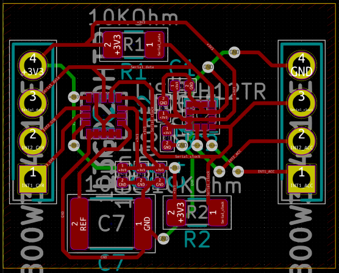
The block diagram of the circuit has been divided into its sepate parts by their funciton to improve ease of reading. This will also help when placing the components onto the PCB in that stage of design as the components which need to be close to each other are already in reasonable place relative to each other.
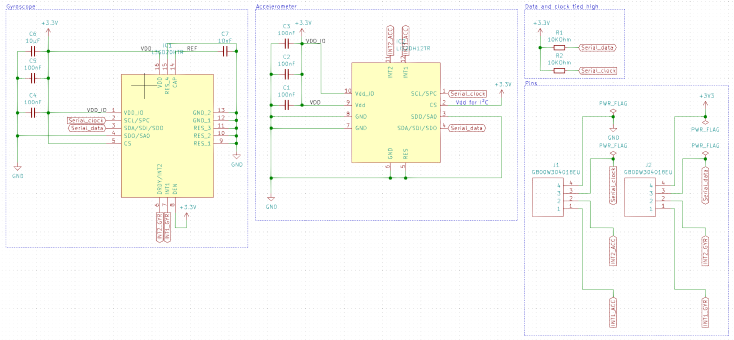
Unable to get one of the components
18/1/2021 1:57PM
One of the components in the current design has gone out of stock on the PCB manufacture's website and will not be boack in stock for a number of months. As such, it will need to be replaced with a different component or a different manufacture found. It would be prefereable to redesign as the components in this design are not optimal as the main ICs could be condensed to a single IC, which would vastly simplify the design.

Changing the IC(s)
26/1/2021 3:29PM
With the lack of options and stock on jlcpcb.com, I am looking at finding another, local PCB manufacture. After seraching around, I found PCBTrain who provide a service which allows the use of any of the components on Mouser, which substantially increases the number of components that can be picked from.

However, the component I was looking at is still not avaliable, it seems likely that the component is in shortage and I will need to find an alternative. Though with the large number of avaliable components on the new site, I should be able to find a suitable one.
Third circuit design
28/1/2021 10:59PM
The circuit has been redesigned for the new IC; the pins have been connected to the required outputs on the PCB and the voltage supply smoothed according to the datasheet. The new IC is also smaller than a single one of the previous ICs, so the PCB has been vastly shrunk.

I used the datasheet to figure out which pins needed to be connected to the communication off of the PCB.
PCB design complete
28/1/2021 11:45PM
I have finished the first stage (block diagram) of the new circuit and uploaded the BOM (bill of materials) to the site I plan to use to check that the components are avaliable.
I modified the python script that generates the bill of matrials so it could output the format that the website wants. Below shows the table of materials before export.
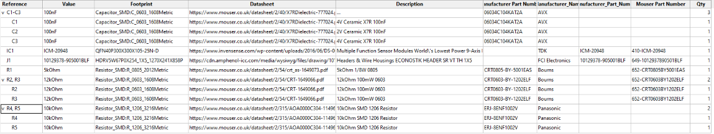
All the components are currently in stock and avaliable through this site.

System Overview Concept Stage
4/3/2021 10:39PM
Below is the start of the design stage for the control system for the TVC mount. I have gone over the main points that I will need to address during construciton of the program and considered solutions to these problems.
Below is a breif overview of each of the problems that I will need to tackle and the physics of how this system works.

Below I consider the effect of the force from the propulsion on the rotation of the rocket.

Here, I consider how to calculate the moments of inertia which are needed in order to calculate the effect of the torque from the propolsion on the rotation of the rocket.

Finally, I considered how the propulsion would need to be angled and moved to correct the rotation knowing how much force is required. To do this, a correction speed is needed to determine how quickly the mount should try to correct any rotation.
It should also take into account any deviation from vertical and correct this also.

I2C communication
11/3/2021 1:12PM
Using the I2C interface
#include <Wire.h> ; //library for Arduino I2C
void setup(){
Wire.begin(); //initialise the I2C interface
}
//To receive data from address "addr" and from memory location "memLoc":
Wire.beginTransmission(addr);
Wire.write(memLoc);
Wire.endTransmission();
//sets the pointer to memLoc
Wire.requestFrom(addr, n); //where n is the number of bytes to read back
while(Wire.avaliable()){
char n = Wire.read();
//append c to a string to get data
}
For the ICM-20948:
- Address = b1101000 where the last bit is determined by AD0
- This is 7 bits long and the final 8th bit is r/w̄
[3]p.30 for r/w sequences
[3]p.32 for register addresses
WHO_AM_I register sanity check:
- Address: 0x00
- Value: 0xEA
Useful data:
0x2D to 0x38
A total of 12 bytes
Each value has format: higher, lower and must be concatenated to get the complete value
6 Buffers
- Accelerometer:
- Gyroscope:
To get all the data from these 12 buffers; send 0x2D and then receive 12 bytes
Testing the new circuit
16/3/2021 10:38PM
The circuit boards have arrived! With the boards here, I can start to work on the code to interact with them and control the servos.


I plugged the board into the breadboard and connected power; thankfully, it didn't fry it and the pins fit into the breadboard better than the arduino did.

With power connected, all I needed now was to connect the data and clock pins between the board and the Arduino. At first I used cut off legs from compnents as I had done with the power; however, the longer distance meant that I would need something longer. As such, I used a thicker wire with a solid core to prevent it fraying while pushing it into the breadboard.
I used the below tools to cut and strip the cable to the correct length
Below is the wire I used; a solid core, 20-22 gauge wire.
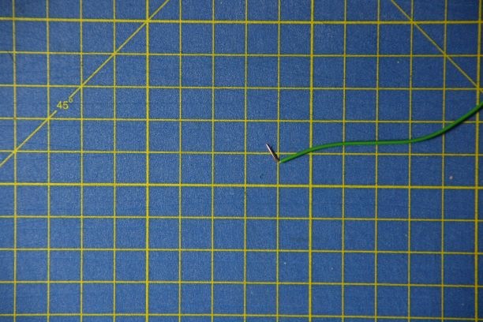
Next, I measured the supply from the Arduino to ensure it was within the range I expected.
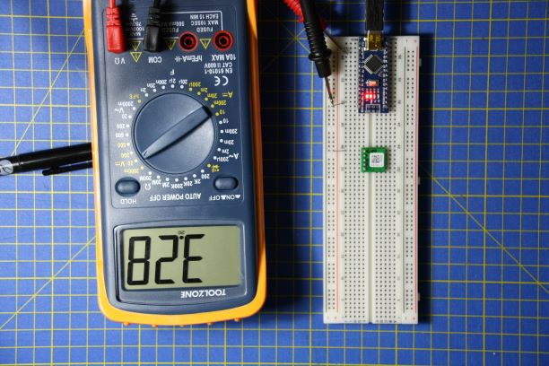
The measurement should show 3.3V, so the 3.28V is well within the expected range.
After this, I checked the supply voltage on the board after the voltage divider to ensure that it could power the board
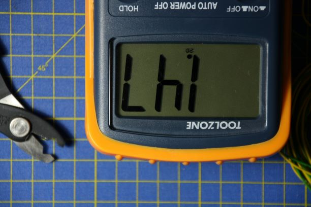
This read back at 1.47V which is too far below the miniumum 1.71V needed to run the IC
To fix this, I hooked the supply voltage of the divider up to the 5V rail on the Arduino (which read closer to 4.3V) rather than to the 3.3V rail (which read 3.28V as shown further up) increasing the voltage out of the voltage divider. The user of a potentiometer on the board would have made this easier to fix.
This brought the voltage on the board upto 1.53V which was capable of powering the board, though I will need to be concious of power draw as this is still quite low.
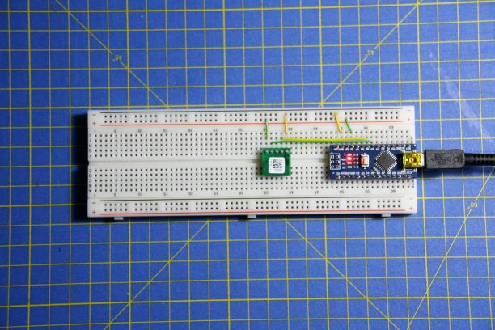
Reading the first register
16/3/2021 10:49PM
With the circuits up and running in a breadboard, I used the code I wrote to receive data from the circuit through I2C.
 This read back the correct value of 0xEA from the "WHO_AM_I" register at location 0h00.
This read back the correct value of 0xEA from the "WHO_AM_I" register at location 0h00.
Figuring out the issue
18/3/2021 4:40PM
Having written the code that should be capable of reading the data from the IC, it has been unable to get the data it should have. However, the responses from the IC suggest that it is functioning correctly in terms of communication.

I have concluded that the reason for the sensors in the IC not functioning correctly to fill the registers must be the result of the higher voltage data lines from the Arduino causing the voltage supply to the IC to increase and fluctuate.
To solve this, I plan to use the transistors I bought to control the servos to bridge between the two voltages; this will (24/3/2021: will NOT require) also require the use of diodes to specify the direction of communication.
Voltage level shifter
11/4/2021 9:47PM
Over the last week, I have been researching, designing and making a voltage level shifter which should be able to bridge between the IC and Arduino while ensuring that the voltages of both are maintained.
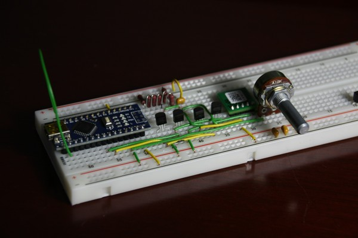
I started with a naive solution (above) in the form of four transistors that each tried to give their respective I2C device the required voltage; this resulted in a feedback loop which was unable to function. After some research in to how commertially avaliable versions worked, I came across a design which involed two inverters (not gates: the triangles with circles at the points) for each direction (shown below)
 [6]
[6]
Using this, I made a single side of the voltage shifter as a test to ensure I could get it working. I made use of an osciloscope to allow checking of changing voltages.

The above shows the Arduino connected to one of these bi-directional level shifters. I arranged it as a square to make it easier to see the difference between the directions (left goes to 5V and right goes to 3.3V in this case) and the voltage each transistor is running at (top at 5V and bottom at 3.3V). The 3.3V at the bottom is used as the Arduino has a 3.3V output; this will need to be changed to 1.8V for the IC

The above shows the waveform output from one side of the voltage shifter; the top of the waveform correctly reaches 5V but the bottom of the waveform doesn't return to 0V.
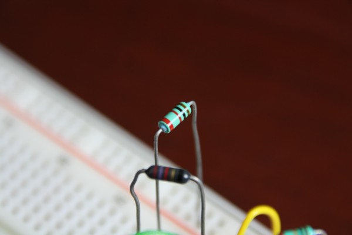
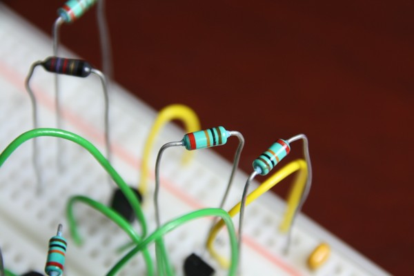
I later discovered the cause of this to be the differnce between a 1kOhm resistor and a 10kOhm resistor which have almost identical coloured identifying stripes on them. 10k is brown, black, orange while 1k is brown, black, red. With this fixed, it worked correctly and I moved on to clean up the circuit, draw up the circuit and replicate it for the other line needed for I2C.


Checking that the fix has actually worked; both the 3.3V side and the 5V side show returning to 0V and reaching near to the correct voltage, 3V in the case of the 3.3V side and 4V in the case of the 5V side.

Above shows the diagram drawn up in KiCAD.
Below shows the circuit cleaned up and duplicated.
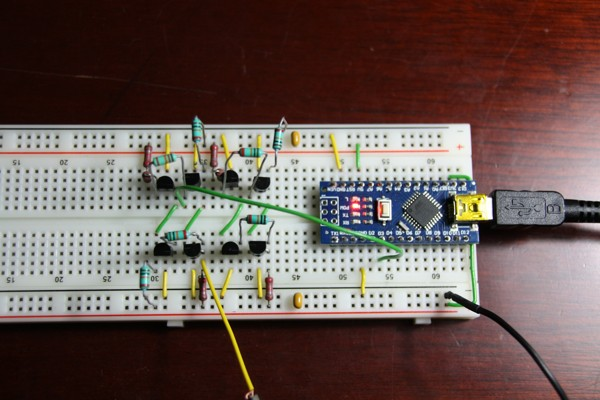
Changing to MOSFETs
18/4/2021 2:43PM
I have continued to try get the BJT transistors to function as a set of four inverts and have been unable to get them to function adequately. THey have funcitoned correcly when opperated manually, but have too high resistances and capacitances to be switched by the I2C devices.
To resolve this, I have found two more sources that suggest using MOSFETs in this situation; I originally found a document from a credible source that suggested this and I followed other sources that suggested the route that I took (which only works correctly for uni-directional signals, e.g. a servo or motor).
List of MOSFET sources
MOSFETs installed
21/4/2021 12:08AM
MOSFETs have arrived along with some pins to plug another Arduino into the breadboard.

As expected, using the MOSFETs in the way described in the sources listed in the previous post proved to work first time. Below is the new circuit.

The bellow image shows the serial return from the Arduino; it shows a successful serial connection from the Arduino, then a successful I2C connection from the Arduino to the IC, then a successful reading of the WHO_AM_I register as hex EA. However, the readings from the actual sensor parts of the IC return 0's.

...
22/4/2021 9:46AM
From the ICs datasheet...

None of the sensors are switched on at powerup

The sleep bit needs to be cleared before the sensors switch on.
Not quite as simple as I thought
27/4/2021 10:11AM
When the device is switched out of sleep mode, much of the returned data becomes ones. This is probably the result of the I2C communication being give a small slice of the processing time while the data from the sensors is collected. The only issue with this is that the registers that should contain the data from the sensors remain empty; this data might be being sent somewhere else (such as the FIFO memory, though this also appears empty).
This is, however, a vast improvement over the previous version as I can now read and write to registers and observe the changes this makes. I have been exploring examples that others have made to use this IC, though I must be missing something as I can't see the difference between what they are doing and what I'm doing. The only thing I haven't checked is whether some of the interupts only act internally and are needed to move data around in the IC.
Even when the device only returns zeros form all other registers, the WHO_AM_I register continues to return the correct value, which suggests that the device is still functioning correctly.
Digital Oscilloscope
28/4/2021 2:31PM
Currently looking into getting access to a digital / storing oscilloscope to get a better look at the I2C messages being sent. This will let me double check that the messages being sent are correct and also take a look at the signal integrity. The oscilloscope I have been using can only view repeating signals which makes it hard to use in a digital context.
New inspirations for software
6/5/2021 10:05AM
I found a thread on an official open source project for a breakout board of the IC I am using. One of the posts gives a commented run through of most of the possible settings you might want to adjust on the IC.
Eliminating variables
10/5/2021 11:46PM
Having tried a couple of different example softwares for the IC, I am now tring to eleminate and test all other possible failure points and test each one indindvidually.
So far, this has consisted of:
-
Trying different software:
-
Trying different test boards:
- Arduino Nano

- Arduino Every

The PCB works with neither of these.
-
I have ordered a premade version of the PCB I designed to test if this is the issue also. This should arrive in the next week. While I find it very unlikely that this is the problem, it is beginning to be one of the few remaining untested points.
Pre-made PCB
12/5/2021 1:00AM

I received the pre-made PCB from Adafruit and have modified their example, which I had been trying to use with by PCB, and managed to get it to return all the necessary data. The below code prints the data to the serial bus back to the computer.

I have also put together a program in Processing (a Java based drawing editor) which takes the serial data from the Arduino and displays a cube with the rotational translations applied.
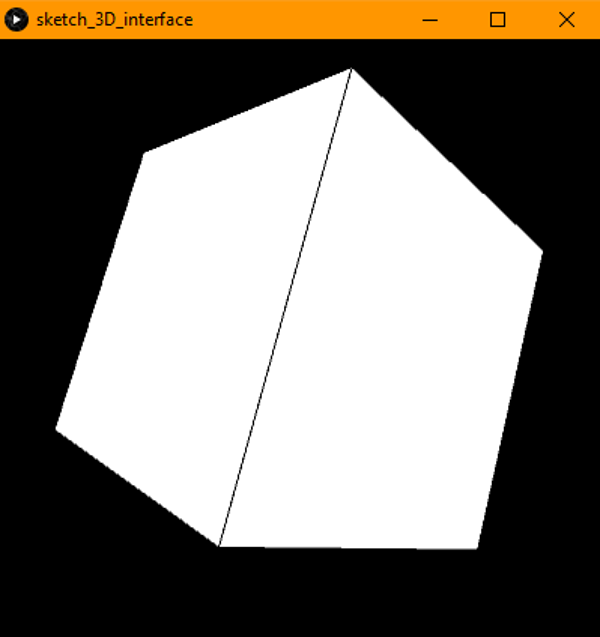
The next steps will be fully implementing the display program to allow me to visualise what the Arduino is sensing and design a sensor filter to get accurate readings.
I migh also consider revisiting my PCB to see if I can find the reason it doesn't work, though I'm not sure I will have time to do this.
Using GitHub to store and version code
27/5/2021 10:19PM
I have setup a GitHub repository that will contain any code that I write and also the libraries I have made use of in the project. This will allow me to access the code from anywhere without needing to worry about different versions or losing any progress.
GitHub is widely used in industry both in the open and closed source markets. I am using the public version of the site, though there is also a version designed specifically for enterprises. I will make use of the history of changes and version control to document any changes I make to the code I write and the intent I had with those changes.
Progress with the data from the IMU
27/5/2021 11:44PM
With the new pre-made PCB, I have been able to sucessfully pull the required data from it and read this data on connected computer. In a previous post, I was able to display a cube that moved randomly using this data. I recently found the issue; I had been interpreting an acceleration directly as a displacement (distance) which had resulted in seemingly random data with a magnitude similar to what I might have expected.
With this fixed, I have been able to get the cube to rotate with some resemblance the actual movement of the setup. However, the movement is not smoothed and doesn't correctly slow down yet; the cube continues to spin and move even when the board is still. There is a video of this on the GitHub page that demo's me trying to stabilise the board by hand and shows the drift exprienced by the system. The first 30 seconds or so of the video, the system is calibrating using a simple average acceleration offset while the board is stationary.
16/12/2020 10:52AM
List of other components from the PCB producer used in this new design:
The next step will be putting this information into Gerber format (an industry standard for PCB printing and manufacture).